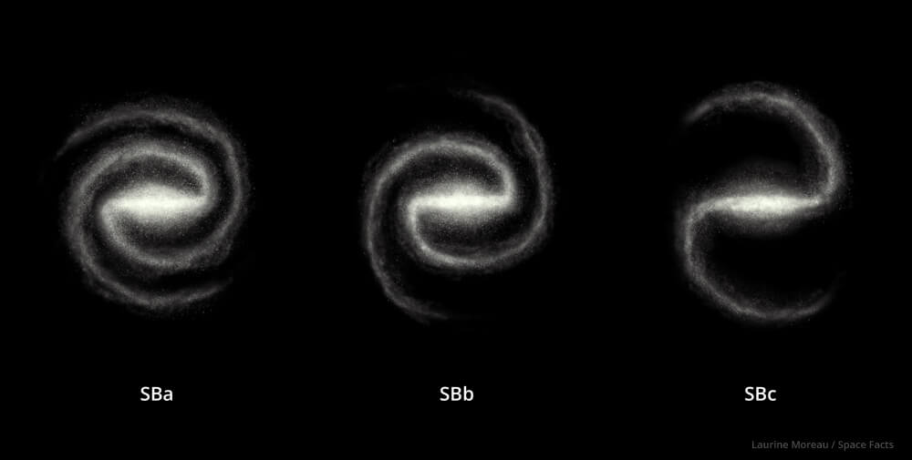
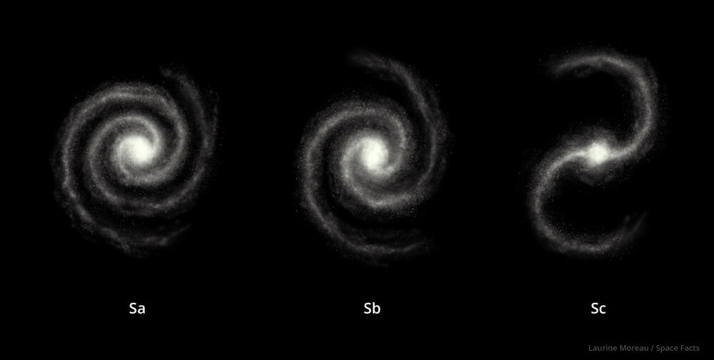
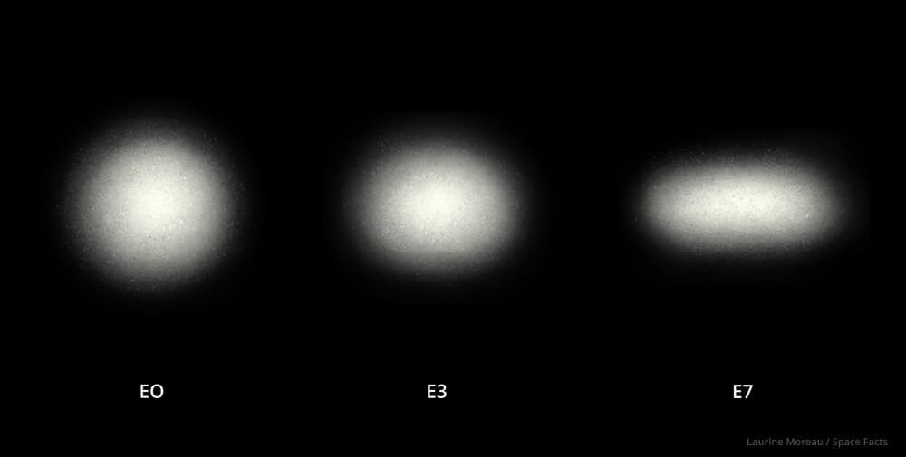
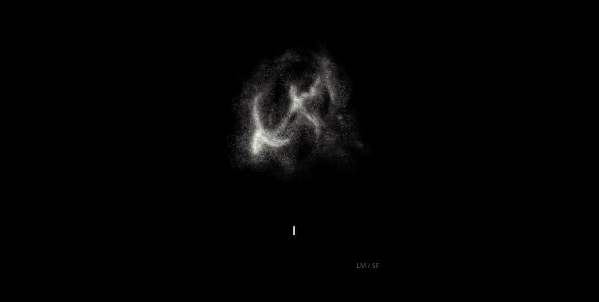

You’ve probably heard that our Sun is located in the Milky Way galaxy.
But what is a galaxy anyway? The simple answer is that a galaxy is a collection of stars held together
by their mutual galaxy. In other words, all the stars in a galaxy are kept together by the gravity of all the other stars (as well as the invisible, mysterious dark matter).
We know the Milky Way pretty well, so let’s consider it as a good example of a galaxy. The Milky Way is a spiral galaxy. It has a bright central core with a high density of stars, and then a flattened disk surrounding it – like a spinning record. Two spiral arms start just outside the core, and then spiral outward like a pinwheel to the outer edges of the galaxy. The Milky Way measures about 100,000 light-years across, and is thought to contain 200-400 billion stars.
But the stars we can see are just a tiny fraction of the complete galaxy. It’s also surrounded by a vast halo of dark matter. This material is invisible, and doesn’t interact with regular matter or give off any kind of radiation that we can detect. But astronomers can measure its effects because it does exert a gravitational force on other matter. In fact, the Milky Way is made up of mostly dark matter. The stars account for about 580 billion solar masses, and the dark matter could be another 6 trillion solar masses.
Our Milky Way is just an example of a galaxy, though. There is another type of galaxy called elliptical, and they’re even more common. The smallest galaxies in the Universe, the ultra-compact dwarf galaxies are only a little larger than a globular star cluster. But then the largest galaxies in the Universe also have this elliptical (egg-like) shape. A good example is the galaxy M87. It’s thought to have 2.7 trillion stars.
Stars are collected together into galaxies. Galaxies are collected together into groups of galaxies, and these groups are collected into clusters. The largest structures in the Universe are galaxy superclusters, which contain millions of galaxies and can measure hundreds of millions of light-years across.
The most widely used classification scheme for galaxies is based on one devised by Edwin P. Hubble and further refined by astronomer Gerard de Vaucouleurs. It uses the three main types, and then further breaks them down by specific characteristics (openness of spirals, size and extent of bars, size of galactic bulges). In this age of multi-wavelength observing, the subclassifications also include markers for such characteristics as a galaxy’s star-formation rate and age spectrum of its stars.
Spiral galaxies are the most common type in the universe. Our Milky Way is a spiral, as is the rather close-by Andromeda Galaxy. Spirals are large rotating disks of stars and nebulae, surrounded by a shell of dark matter. The central bright region at the core of a galaxy is called the “galactic bulge”. Many spirals have a halo of stars and star clusters arrayed above and below the disk.
Spirals that have large, bright bars of stars and material cutting across their central sections are called “barred spirals”. A large majority of galaxies have these bars, and astronomers study them to understand what function they play within the galaxy. In addition to bars, many spirals may also contain supermassive black holes in their cores. Subgroups of spirals are defined by the characteristics of their bulges, spiral arms, and how tightly wound those arms are.
Elliptical galaxies are roughly egg-shaped (ellipsoidal or ovoid) found largely in galaxy clusters and smaller compact groups. Most ellipticals contain older, low-mass stars, and because they lack a great deal of star-making gas and dust clouds, there is little new star formation occurring in them. Ellipticals can have as few as a hundred million to perhaps a hundred trillion stars, and they can range in size from a few thousand light-years across to more than a few hundred thousand. Astronomers now suspect that every elliptical has a central supermassive black hole that is related to the mass of the galaxy itself. Messier 87 is an example of an elliptical galaxy. There are some subgroups of ellipticals, including “dwarf ellipticals” with properties that put them somewhere between regular ellipticals and the tightly knit groups of stars called globular clusters.
Irregular galaxies are as their name suggests: irregular in shape. The best example of an irregular that can be seen from Earth is the Small Magellanic Cloud. Irregulars usually do not have enough structure to characterize them as spirals or ellipticals. They may show some bar structure, they may have active regions of star formation, and some smaller ones are listed as “dwarf irregulars”, very similar to the very earliest galaxies that formed about 13.5 billion years ago. Irregulars are characterized by their structures (or lack of them).
Antennae Galaxies Facts The Antennae is a pair of spiral galaxies that are interacting and mingling their stars. They began their galactic dance over a few hundred...
Sombrero Galaxy Facts The Sombrero Galaxy is one of the most unusual looking barred spiral galaxies visible from Earth. Its bright nucleus, large central bulge and spiral...
Triangulum Galaxy Facts The Triangulum Galaxy, also known as M33, is one of the closest spiral galaxies to the Milky Way. It lies 3 million light-years away,...